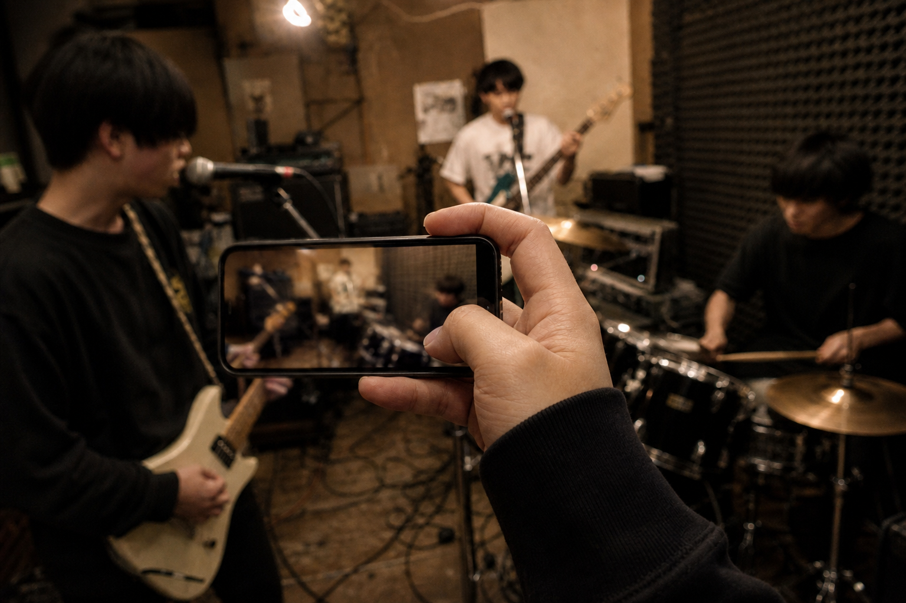
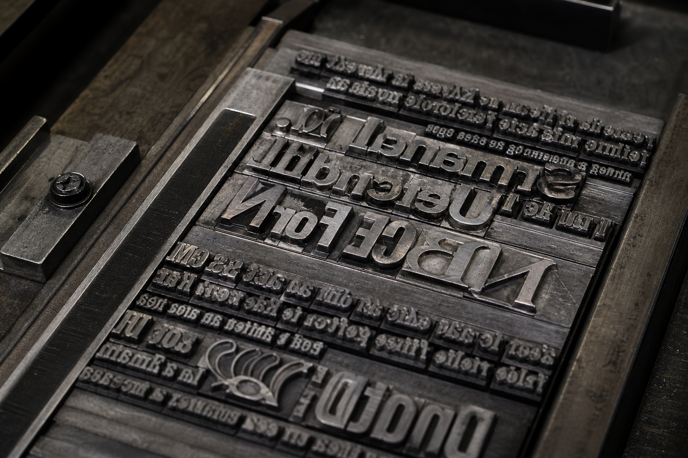
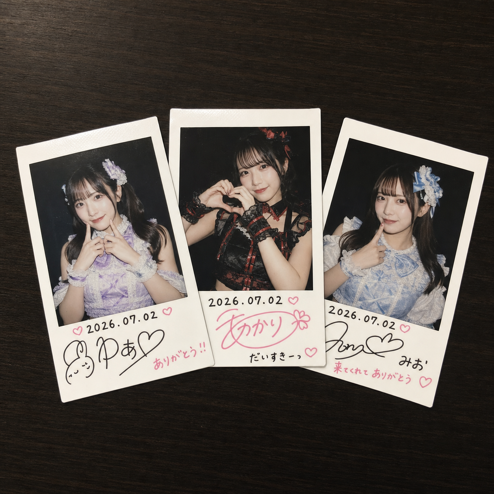
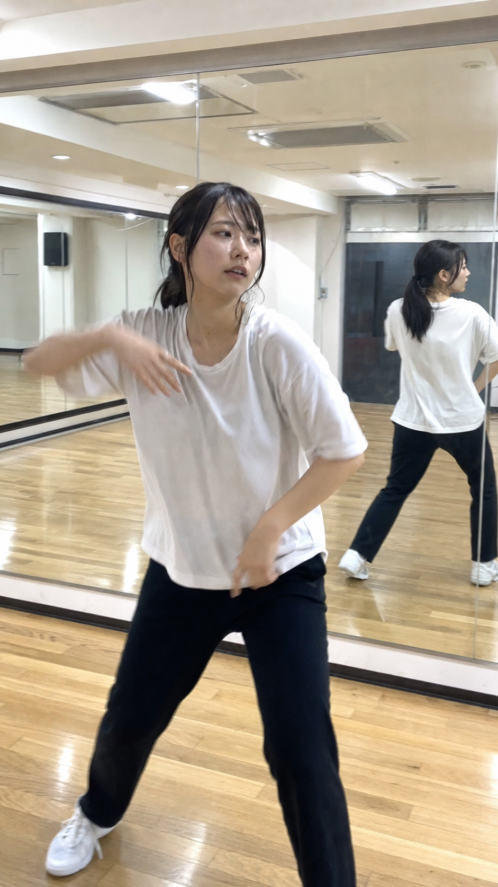
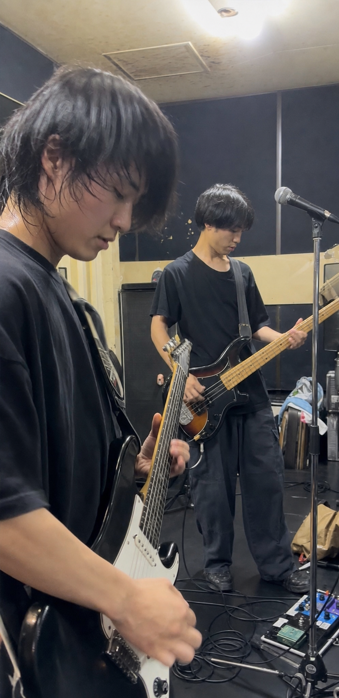
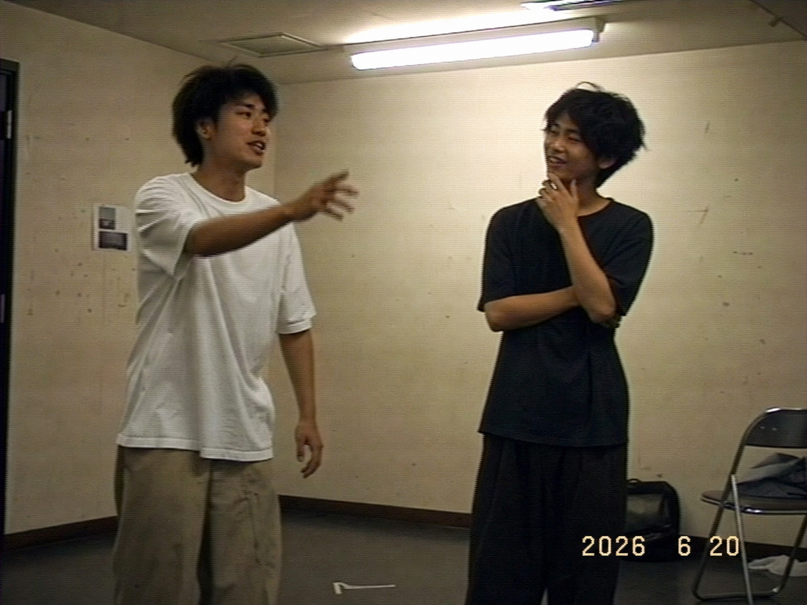
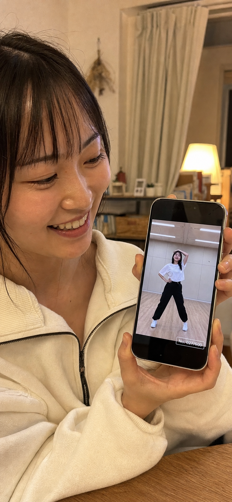
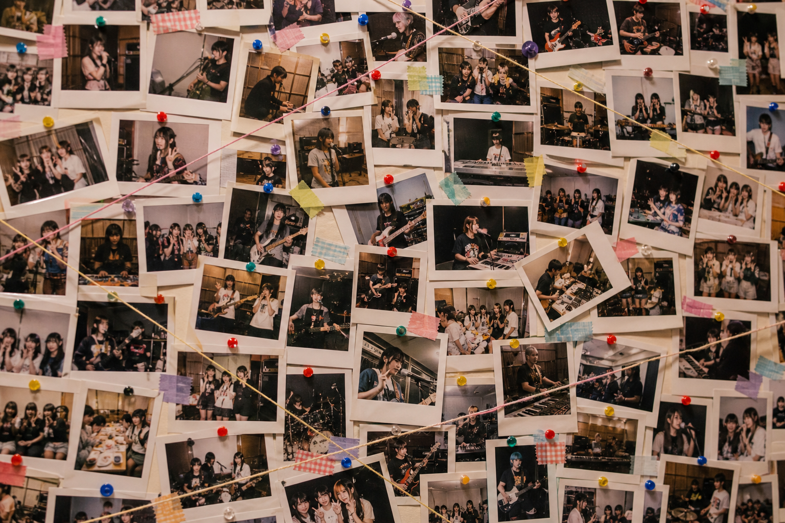
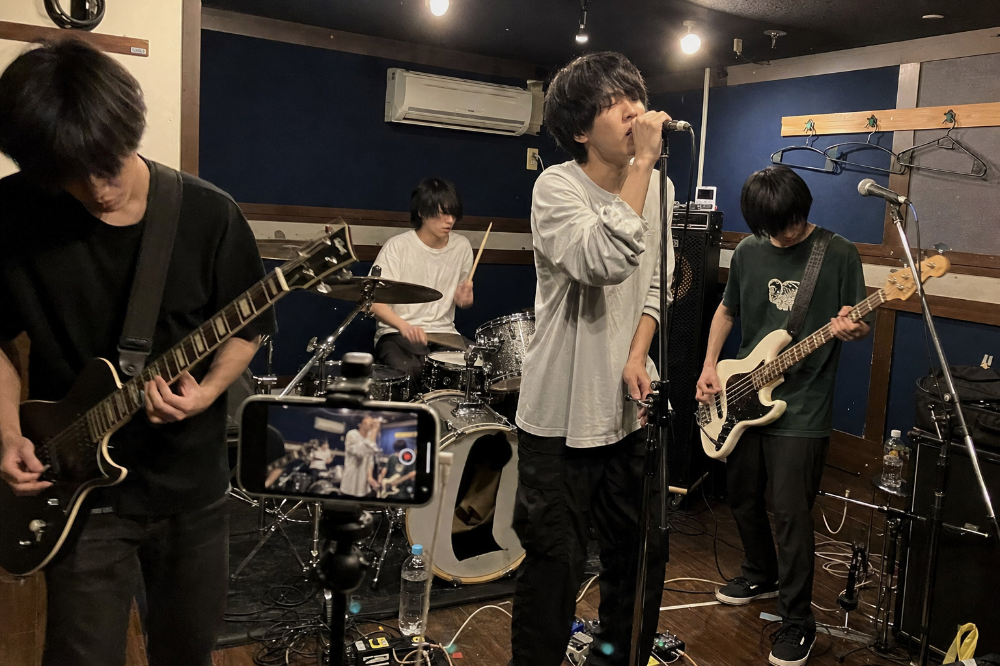

毎日の練習・リハ・ネタ合わせ。
その時間は、お金にならないまま消えていく。
ライブや配信になる前の「下積みの時間」は、いちばん濃くて、いちばん本物です。でも、いまはどこにも残らず、収益にもならない。Lapsellは、その時間を——版画の限定エディションのように——限られた数だけ、番号を振って刷り、価値ある少数として売るための仕組みです。
Lapsellの流れは、活版印刷の工房で1枚を刷る工程とそっくりです。出品から受け取りまで、あなたがやるのは「当日スマホで撮るだけ」。
これからやる練習の「時間枠」を出品します。日時・価格・エディション数（＝配布本数）・1本の長さを決めるだけ。活字を組んで版を作るように、何を・いくつ刷るかをここで設計します。
ファンは中身が撮られる前に時間枠を買います。何が届くかはまだ分からない——「刷り上がりを待つ」楽しみごと、あなたの時間に価値がつきます。
練習当日、スマホで撮るだけ。編集も特別な機材もいりません。版にインクをのせる工程が、あなたの「手ずから」の撮影にあたります。
撮った映像をアップすると、自動で約10秒の短い断片に分割されます。1回のプレスから複数の刷りが生まれるように、1回の練習から複数の断片が刷り上がります。
世に出す前に、あなた自身が中身を確認できます。本当にまずい「事故」の瞬間だけ非公開に。ライブ配信と違い、撮ってからアップするので、まずい瞬間は世に出ません（該当者には自動返金）。
承認された断片に番号が振られ、購入者ひとりひとりへランダムかつ一意に配られます。「3 / 50」のように、同じ練習から生まれても、受け取る1本は世界に1つ。
ファンは自分だけの番号入りの断片を受け取り、手元に保有します。電子透かしで真正性が検証でき、「本物である証明」ごと所有できます。
出品から番号入りの配布まで、アプリの画面はこう動きます。組版のように枠を決め、刷りを検め、1本ごとに番号を振る——工房の工程が、そのまま4つの画面になっています。
練習枠を出品する
当日、スマホで撮るだけ

約10秒に分割・事故だけ非公開
世界に1つの、あなたの1本

刷った数だけ、この世にある。
版画の世界では、刷る枚数をあらかじめ決め、1枚ごとに「3 / 50」と番号を振ります。刷った数だけこの世に存在し、それ以上は刷らない。Lapsellの「エディション数」も、まったく同じ考え方です。
数を絞り、番号を振るからこそ、1本に意味が宿ります。出品するあなたに返ってくる価値は、大きく4つ。
捨てていた練習・リハ・裏側の時間が、そのまま新しい収益源に。初期費用0円・手数料5%〜で、ノーリスクで始められます。
「自分が育てた」という物語ごと買われます。結成11年目でブレイクしたグループの下積み時代の練習を、番号入りの一点物で持っていたら——そういう期待が価値になります。
電子透かしと固有番号で「本人の練習から刷られた本物」と検証可能。模造できない一点物として、安心して所有してもらえます。
ライブ配信と違い、撮影してからアップロード。公開前に中身を確認できるので、まずい瞬間は世に出ません。安心して素を出せます。

「本当に売れるの?」——答えは、いまの物販が示しています。ファンはすでに、素のコンテンツ・本人とのつながり・世界に1つのものにお金を払っています。Lapsellの「番号入りの一点物」も、同じ行動で買われます。
ライブ物販でグッズを買う人の年間支出は平均およそ2.2万円。アイドル系のグッズ購入率は75.4%にのぼります。
手書きのチェキ1枚 約1,500円が、ライブアイドルの収入の過半を支えることも。すでに「一点物・手ずから」に価値が認められています。
本人の“素の日常”に課金する仕組みは、世界200万人超が利用。Lapsellの「動く一点物」も、地続きの体験です。
まだ有名じゃなくても、生身で活動しているあなたへ。練習も裏側も、番号を振れば作品になります。

日々のダンス練習を出品。スマホを立てて撮るだけで、レッスンの1本1本が番号入りの一点物に。近いファンほど、育つ過程を持ちたがります。

リハや制作風景を限定部数で。あなたの音源になる前の“最初の形”を、こだわりのあるファンが番号付きで所有します。下積みが将来の価値になります。

ネタ合わせ・楽屋の裏側は、いちばん見たいのに残らない。番号を振って刷れば、コアなファンに刺さる“ここだけ”の一点物になります。

ファンが受け取るのは、あなたの練習から刷られた約10秒の断片。「17 / 29」のように番号が振られ、その1本はその人だけのもの。開封する瞬間も、手元に保有する時間も、量産品にはない特別さがあります。
同じ練習から刷られても、受け取る番号は一人ずつ違う。だから「自分の1本」として大切にされます。
電子透かしと固有番号で本物だと証明できるから、安心して所有・保管してもらえます。

その1本は、あなたが刷ったから存在する。

編集も、機材も、特別な準備もいりません。いつもの練習を、スマホを立てて撮る。アップすれば自動で断片に分割され、番号が振られて配られます。
始めるのにお金はかかりません。売れたときだけ、手数料をいただく仕組みです。
配信事故を、事前に防げます。ライブ配信と違い、Lapsellは撮ってからアップロードする方式。公開する前にあなた自身が中身を確認し、まずい瞬間だけを非公開にできます。
非公開にした断片の購入者には、自動で返金されます。だから、素の練習を安心して出品できます。番号入りだから、後から模造される心配もありません。
ファンはすでに、チェキ・生写真・ライブ物販といった「一点物・素のコンテンツ」に日常的にお金を払っています。Lapsellの「番号入りの一点物」は、その延長線上にある体験です。数を絞り、番号を振ることで、安売りではなく“価値ある少数”として届けられます。
必要ありません。当日、いつもの練習をスマホで撮ってアップするだけです。約10秒の断片への分割、番号の付与、配布はすべて自動で行われます。
ライブ配信と違い、撮影してからアップロードする方式です。公開前にあなた自身が中身を確認し、本当にまずい瞬間だけを非公開にできます。非公開分の購入者には自動で返金されるため、安心して素を出せます。
版画の限定部数と同じで、その練習から刷る（配る）本数のことです。50本と決めれば、この世に届く断片は50本きり。少なくするほど1本の希少性が上がり、多くすればより多くのファンに届きます。価格とあわせて、あなたが自由に設定できます。
1回の練習映像は複数の短い断片に分割され、購入者ひとりひとりに固有の番号（例:3 / 50）で一意に配られます。同じ練習から生まれても、受け取る1本はその人だけのもの。電子透かしで真正性も検証できます。
初期費用・月額費用は0円です。売れたときだけ、手数料5%〜をいただきます。売れなければ費用は発生しないので、ノーリスクで始められます。
これからやる練習の時間枠を出品するところから。撮るのは当日、スマホで。あなたの時間が、価値ある少数の一点物になります。
出品をはじめる ›